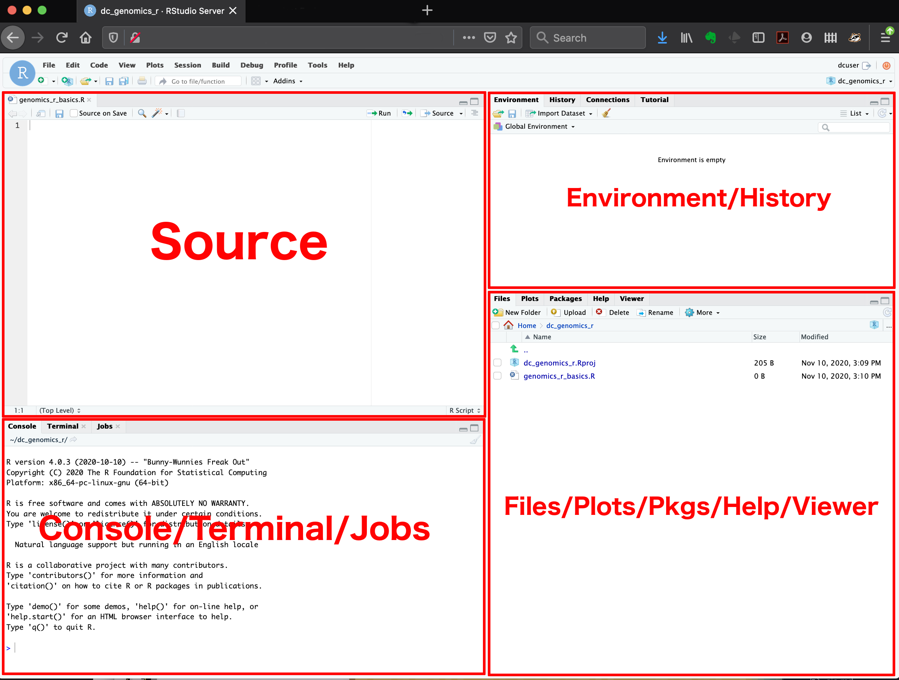
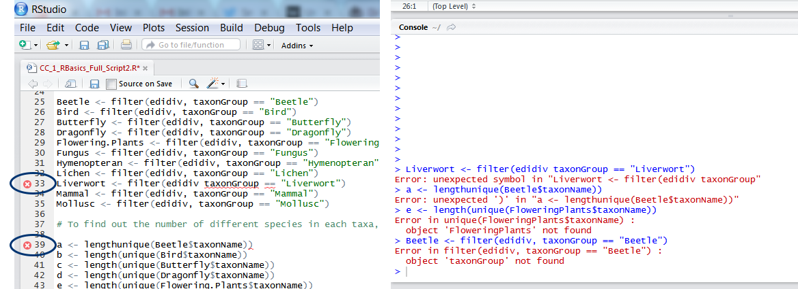
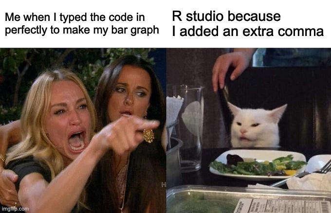

Code
# Introduction to R
# Getting familiar with R
# Written by Nicholas Wu, 06/02/2027, Murdoch UniversityBefore the first workshop in Week 1, you need to be familiar with R, RStudio and the basics of coding. Work through this page before class. It takes about an hour.
Skip this step if R and RStudio are already installed on your computer.
All Murdoch computers have R and RStudio installed. Log in and open RStudio.
Keep everything for this unit in one folder. This saves a lot of time hunting for files later.
ECS200 (avoid spaces in folder and file names).data. Save every dataset from the workshops here.ECS200 folder.ECS200/
├── data/
│ ├── plant_calcium.csv
│ └── ...
├── week01_quality_check.R
└── ...In every workshop, the code imports data with a path such as "data/plant_calcium.csv", which means “the file plant_calcium.csv inside the data folder”. This works as long as your working directory is your ECS200 folder (Step 3 below).
RStudio has four panels:

Click File > New File > R Script to start a new script. At the top, write who is writing the script, the date and its purpose:
# Introduction to R
# Getting familiar with R
# Written by Nicholas Wu, 06/02/2027, Murdoch UniversityThe # (hash) tells R to ignore the rest of the line. Use it to write comments that explain what your code does.
Comment often and in detail. Someone else should be able to understand what you did and why, and that includes future you.
To run a line of code, put the cursor on it and press Ctrl + Enter (Windows) or Cmd + Enter (Mac). The result appears in the Console.
# Number of frogs counted at a pond
frogs <- 18
# Add 5 frogs observed the next day
frogs_total <- frogs + 5
# Print the result
frogs_total[1] 23<- is the assignment operator: it stores the value on the right in an object with the name on the left (object_name <- value). The object then appears in the Environment panel.
A vector is a list of values of the same type, created with c() (for “combine”):
# Leaf lengths (cm) of 5 Eucalyptus trees
leaf_sizes <- c(23.4, 21.8, 25.1, 19.7, 22.5)
# Average leaf size
mean(leaf_sizes)[1] 22.5mean() is a function. Functions take inputs (arguments) inside the brackets and return a result.
A data frame is a table with rows (observations) and columns (variables). It is the object you will use most often in this unit.
# A small data frame of species and their body mass (g)
example_data <- data.frame(
species = c("Lizard", "Bird", "Bat"),
mass = c(15, 120, 35)
)
example_data species mass
1 Lizard 15
2 Bird 120
3 Bat 35🧪 How would you find the largest leaf size? (Hint: try the max() function.)
max(leaf_sizes)[1] 25.1
A package is a bundle of functions that adds extra abilities to R, for example for tidying data or making maps. You install a package once with install.packages("package-name"), typed in the Console. You then load it with library(package-name) at the start of every script.
In this unit we mostly use the tidyverse, a collection of packages for importing, tidying and plotting data.
# Install the tidyverse (only once, in the Console)
install.packages("tidyverse")
# Load it (at the top of every script)
library(tidyverse)Throughout this unit, functions that come from a package are written with the package name in front, separated by two colons: readr::read_csv(), dplyr::filter(), ggplot2::ggplot(). This tells you which package each function comes from, and avoids confusion when two packages have functions with the same name.
Functions written without a prefix, such as mean(), sd(), lm() and t.test(), are built into R and are always available.
The working directory is the folder where R looks for files and saves outputs. Check where it is with getwd(), and change it to your ECS200 folder with setwd():
# Where is R looking at the moment?
getwd()
# Change the working directory to your ECS200 folder (change this to your own path)
setwd("C:/Users/YOUR-NAME/Documents/ECS200")\), which R does not accept. Change them to forward slashes (/): "C:/Users/YOUR-NAME/Documents/ECS200".ECS200 folder.If you see an error like this:
library(ggrepel)
#> Error in library(ggrepel) : there is no package called 'ggrepel'the package is not installed yet. Run install.packages("ggrepel") in the Console.
Imagine we measured leaf traits of sugar maple seedlings from an untreated watershed and a calcium-treated watershed, to test whether adding calcium improves seedling growth. The background to this study is here.
Download plant_calcium.csv and save it in your data folder.
library(tidyverse)
# Import the CSV file and store it in an object called plant_calcium_data
plant_calcium_data <- readr::read_csv("data/plant_calcium.csv")
# First 6 rows
head(plant_calcium_data)# A tibble: 6 × 11
year watershed elevation transect sample stem_length leaf1area leaf2area
<dbl> <chr> <chr> <chr> <dbl> <dbl> <dbl> <dbl>
1 2003 Reference Low R1 1 86.9 13.8 12.1
2 2003 Reference Low R1 2 114 14.6 15.3
3 2003 Reference Low R1 3 83.5 12.5 9.73
4 2003 Reference Low R1 4 68.1 9.97 10.1
5 2003 Reference Low R1 5 72.1 6.84 5.48
6 2003 Reference Low R1 6 77.7 NA 7.64
# ℹ 3 more variables: leaf_dry_mass <dbl>, stem_dry_mass <dbl>,
# corrected_leaf_area <dbl># Last 6 rows
tail(plant_calcium_data)# A tibble: 6 × 11
year watershed elevation transect sample stem_length leaf1area leaf2area
<dbl> <chr> <chr> <chr> <dbl> <dbl> <dbl> <dbl>
1 2004 W1 <NA> W1-3 15 102 NA NA
2 2004 W1 <NA> W1-3 16 103 NA NA
3 2004 W1 <NA> W1-3 17 92 NA NA
4 2004 W1 <NA> W1-3 18 83 NA NA
5 2004 W1 <NA> W1-3 19 119 NA NA
6 2004 W1 <NA> W1-3 20 96 NA NA
# ℹ 3 more variables: leaf_dry_mass <dbl>, stem_dry_mass <dbl>,
# corrected_leaf_area <dbl># Structure: the type of every column
dplyr::glimpse(plant_calcium_data)Rows: 359
Columns: 11
$ year <dbl> 2003, 2003, 2003, 2003, 2003, 2003, 2003, 2003, 20…
$ watershed <chr> "Reference", "Reference", "Reference", "Reference"…
$ elevation <chr> "Low", "Low", "Low", "Low", "Low", "Low", "Low", "…
$ transect <chr> "R1", "R1", "R1", "R1", "R1", "R1", "R1", "R1", "R…
$ sample <dbl> 1, 2, 3, 4, 5, 6, 7, 8, 9, 10, 11, 12, 13, 14, 15,…
$ stem_length <dbl> 86.9, 114.0, 83.5, 68.1, 72.1, 77.7, 85.5, 81.6, 9…
$ leaf1area <dbl> 13.837, 14.572, 12.451, 9.974, 6.838, NA, NA, 5.83…
$ leaf2area <dbl> 12.130, 15.267, 9.731, 10.068, 5.480, 7.643, 9.233…
$ leaf_dry_mass <dbl> 0.0453, 0.0476, 0.0423, 0.0397, 0.0204, 0.0317, 0.…
$ stem_dry_mass <dbl> 0.0300, 0.0338, 0.0248, 0.0194, 0.0180, 0.0246, 0.…
$ corrected_leaf_area <dbl> 29.104, 32.976, 25.319, 23.179, 15.455, 20.440, 21…In the output of dplyr::glimpse(), <dbl> means numbers and <chr> means text (characters).
Two common errors when importing data:
plant_calcium_data <- read_csv("data/plant_calcium.csv")
#> Error in read_csv("data/plant_calcium.csv") : could not find function "read_csv"The package that contains the function is not loaded. Run library(tidyverse) first, or write readr::read_csv().
plant_calcium_data <- readr::read_csv("data/plant_calcium.csv")
#> Error: 'data/plant_calcium.csv' does not exist in current working directoryR cannot find the file. Check that:
.csv);data folder;ECS200 folder (getwd()).Save your script regularly, in your ECS200 folder, with a meaningful name such as intro_to_r.R.
Analyses often go wrong because R thinks a variable is a different type from what you intended. For example, if four treatment groups were coded “1, 2, 3, 4”, R will read them as numbers rather than categories. Always check your data structure!
| Type | Description | Examples | Use |
|---|---|---|---|
numeric (dbl) |
Numbers that can take any value in a range | 3.14, −2.5, 100.5 | Length, mass, temperature |
integer (int) |
Whole numbers | 1, 10, 0, −42 | Counts |
factor (fct) |
Categories with a limited set of values (levels) | “low”, “medium”, “high” | Grouping data, treatments |
character (chr) |
Text | “Site A”, “hello” | Names, labels, notes |
In plant_calcium_data, watershed was imported as text (chr), but it is a categorical variable with two levels: Reference (untreated) and W1 (calcium-treated). We convert it to a factor. The $ sign picks one column from a data frame.
# The first few values of the watershed column
head(plant_calcium_data$watershed)[1] "Reference" "Reference" "Reference" "Reference" "Reference" "Reference"# What type is it?
class(plant_calcium_data$watershed)[1] "character"# Convert it to a factor and save it back into the same column
plant_calcium_data$watershed <- as.factor(plant_calcium_data$watershed)
# Check: it should now say <fct>
dplyr::glimpse(plant_calcium_data)Rows: 359
Columns: 11
$ year <dbl> 2003, 2003, 2003, 2003, 2003, 2003, 2003, 2003, 20…
$ watershed <fct> Reference, Reference, Reference, Reference, Refere…
$ elevation <chr> "Low", "Low", "Low", "Low", "Low", "Low", "Low", "…
$ transect <chr> "R1", "R1", "R1", "R1", "R1", "R1", "R1", "R1", "R…
$ sample <dbl> 1, 2, 3, 4, 5, 6, 7, 8, 9, 10, 11, 12, 13, 14, 15,…
$ stem_length <dbl> 86.9, 114.0, 83.5, 68.1, 72.1, 77.7, 85.5, 81.6, 9…
$ leaf1area <dbl> 13.837, 14.572, 12.451, 9.974, 6.838, NA, NA, 5.83…
$ leaf2area <dbl> 12.130, 15.267, 9.731, 10.068, 5.480, 7.643, 9.233…
$ leaf_dry_mass <dbl> 0.0453, 0.0476, 0.0423, 0.0397, 0.0204, 0.0317, 0.…
$ stem_dry_mass <dbl> 0.0300, 0.0338, 0.0248, 0.0194, 0.0180, 0.0246, 0.…
$ corrected_leaf_area <dbl> 29.104, 32.976, 25.319, 23.179, 15.455, 20.440, 21…as.factor() converts whatever you give it into a factor. Running only the right side of <- would show the result once without changing the data. Assigning it with <- overwrites the column, so the change is stored.
# Number of rows and columns
dim(plant_calcium_data)[1] 359 11# Summary of every column
summary(plant_calcium_data) year watershed elevation transect sample
Min. :2003 Reference:179 Length :359 Length :359 Min. : 1.00
1st Qu.:2003 W1 :180 N.unique : 2 N.unique : 12 1st Qu.: 5.50
Median :2003 N.blank : 0 N.blank : 0 Median :10.00
Mean :2003 Min.nchar: 3 Min.nchar: 2 Mean :10.47
3rd Qu.:2004 Max.nchar: 3 Max.nchar: 4 3rd Qu.:15.00
Max. :2004 NAs :119 Max. :20.00
stem_length leaf1area leaf2area leaf_dry_mass
Min. : 52.70 Min. : 2.480 Min. : 0.000 Min. :0.01170
1st Qu.: 75.65 1st Qu.: 8.792 1st Qu.: 8.802 1st Qu.:0.03975
Median : 85.70 Median :11.616 Median : 11.275 Median :0.05590
Mean : 86.86 Mean :11.713 Mean : 12.024 Mean :0.06368
3rd Qu.: 97.05 3rd Qu.:13.837 3rd Qu.: 14.340 3rd Qu.:0.07855
Max. :132.30 Max. :26.952 Max. :100.372 Max. :0.38700
NAs :126 NAs :117
stem_dry_mass corrected_leaf_area
Min. :0.00790 Min. : 9.597
1st Qu.:0.02360 1st Qu.:21.180
Median :0.03320 Median :25.950
Mean :0.04506 Mean :26.687
3rd Qu.:0.05820 3rd Qu.:31.751
Max. :0.15000 Max. :55.874
NAs :119 # Summary of one column: number of seedlings in each watershed
summary(plant_calcium_data$watershed)Reference W1
179 180 In Week 2 you will learn a tidier way to change columns with dplyr::mutate().
| Term | Meaning | Example |
|---|---|---|
| Console | Where R runs commands immediately | Typing mean(c(1, 2, 3)) |
| Script | A saved file of R code | week01_quality_check.R |
| Environment | The objects currently stored in R’s memory | frogs, plant_calcium_data |
| Object | Anything stored in R: data, values, models | frogs <- 18 |
| Assignment operator | Stores a value in an object | <- |
| Function | A command that does a task | mean() |
| Argument | An input to a function | mean(x, na.rm = TRUE) |
| Package | A bundle of extra functions | dplyr, ggplot2 |
| Vector | A set of values of the same type | c(1, 2, 3) |
| Data frame | A table of rows and columns | data.frame() |
| Logical | TRUE or FALSE | TRUE |
| Comment | A note that R ignores | # this is a comment |
Computers are only as smart as the people using them. Most errors are small typing mistakes that are easy to fix.

When your code does not work, take a breath, then check for:
Mass is not mass);Click through the tabs. Each one shows an error you are likely to meet, why it happens and how to fix it.
mean(leaf_size)
#> Error: object 'leaf_size' not foundWhy: R cannot find an object with that name. Either it is spelt differently (leaf_sizes, Leaf_sizes), or the line that creates it was never run.
Fix: check the name in the Environment panel and copy it exactly. If it is not there, run the line that creates it (leaf_sizes <- c(...)) first. After you restart RStudio, run your script again from the top.
mean(leaf_sizes) # correct name, created earlierplant_calcium_data <- read_csv("data/plant_calcium.csv")
#> Error in read_csv(...) : could not find function "read_csv"Why: the function belongs to a package that has not been loaded, or the function name is misspelt (Read_csv, read.csv vs read_csv).
Fix: run library(tidyverse) at the top of the script, or write the package name in front: readr::read_csv(). If you see there is no package called …, install it first with install.packages("package-name").
mean(c(23.4, 21.8, 25.1)
+Why: the Console shows + instead of > when R thinks your command is not finished. Usually a bracket ) or a quotation mark " is missing.
Fix: press Esc in the Console to cancel, add the missing bracket or quote in your script, then run the line again. RStudio highlights the matching bracket when you click next to one, which helps you check pairs.
mean(c(23.4, 21.8, 25.1)) # two opening and two closing bracketsleaf_sizes <- c(23.4 21.8 25.1)
#> Error: unexpected numeric constant in "leaf_sizes <- c(23.4 21.8"Why: something is missing between two values or words, most often a comma. Other causes are a space in an object name (leaf sizes) or a curly quote (“data”) pasted from Word or a PDF.
Fix: look at the spot R points to. Add the comma, use underscores instead of spaces in names, and retype any quotation marks in RStudio.
leaf_sizes <- c(23.4, 21.8, 25.1)masses <- c(15, 120, NA, 35)
mean(masses)
#> [1] NAWhy: one value is missing (NA). R does not know the missing value, so it cannot know the mean either.
Fix: tell the function to ignore missing values with na.rm = TRUE. Also ask why the value is missing; you will deal with this properly in Week 1.
mean(masses, na.rm = TRUE)
#> [1] 56.66667mean(plant_calcium_data$leaf_dry_mass)
#> Warning: argument is not numeric or logical: returning NAWhy: the column was imported as text (<chr>), usually because the spreadsheet had a word, a unit or a stray symbol in a number column (e.g. "12 g", "n/a", "<0.1").
Fix: check the column type with dplyr::glimpse(). Find the odd values with unique(plant_calcium_data$leaf_dry_mass), correct them in the raw data (or in R), then convert the column with as.numeric().
plant_calcium_data %>% dplyr::select(Watershed)
#> Error: Can't select columns that don't exist.
#> ✖ Column `Watershed` doesn't exist.Why: column names are case-sensitive and must match exactly. Spreadsheet column names often contain spaces or capitals you did not notice.
Fix: print the exact names with names(plant_calcium_data) and copy them. If a name has a space, wrap it in backticks (`leaf mass`), or rename the column to something simple such as leaf_mass.
ggplot2::ggplot(example_data, ggplot2::aes(x = species, y = mass))
+ ggplot2::geom_col()
#> Error: Cannot use `+` with a single argument.Why: each line of a ggplot must end with +. If + starts the next line, R thinks the first line is already a complete command.
Fix: move the + to the end of the line. (The same applies to the pipe %>% in Week 2.)
ggplot2::ggplot(example_data, ggplot2::aes(x = species, y = mass)) +
ggplot2::geom_col()?function_name (e.g. ?mean) in the Console to read its help page and examples.
🧪 Why does this code not work?
my_variable <- 10
my_varıable
#> Error: object 'my_varıable' not foundLook carefully! Training your eyes to spot tiny differences pays off when coding.
The second line uses a dotless “ı” instead of “i” in my_varıable, so R looks for an object that does not exist.